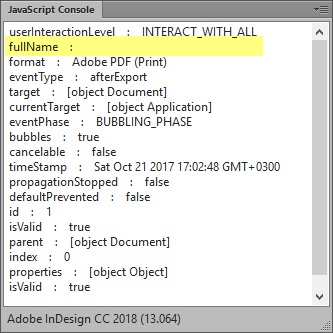

InDesign scripting bugs
AdobeXMPScript library fails to load
Not authorized to send Apple events error
Sort file names function for Mac (workaround for a Mac OSx bug)
metadataPreferences and linkXMP entries only return first delimited value
Find ‘Book’ font style bug (this happens in UI as well)
2025
The Great Folder Fiasco: A Tale of InDesign 20.1 and macOS
[ExtendScript Bug] Folder.create() may no longer work on macOS/InDesign 20.1
CC 2019
Bug on importing Excel file: formatted table is not set after unformatted table is chosen manually in InDesign.
CC 2018
Bug with event "afterExport"
Reported by Uwe Laubender. The source is here.
Something is wrong with event listening for event "afterExport" with CC 2018 13.0.0.125. It was discovered that property fullName of the event will give no reasonable value. It's just an empty string. In versions before, CC 2017.1 and below, there is no problem to track an exported file. With CC 2018 13.0.0.125 — both on Windows and OSX — there seems no way. ( At least no workaround was found.)
Try the following:
1. Exit and restart InDesign WITHOUT your startup scripts.
2. Start the ExtendScript Toolkit (ESTK)
3. Connect to InDesign CC 2018
4. Copy the following script code to the ESTK and run this code:
#targetengine "test"
main();
function main() {
var myApplicationEventListener = app.eventListeners.add("afterExport", myExportPathShow, false);
}
function myExportPathShow(myEventWithAfterExport) {
for (x in myEventWithAfterExport) {
$.writeln(x + " : " + myEventWithAfterExport[x].toString());
}
}
4. Then create a new document in InDesign CC 2018 and export something. For example, export itto IDML. What returns the JavaScript console? Check out the value for the property fullName: it is empty.

Script UI bugs